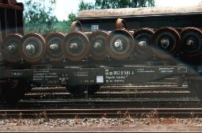
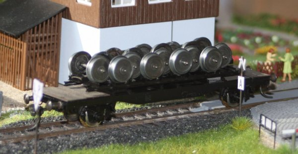
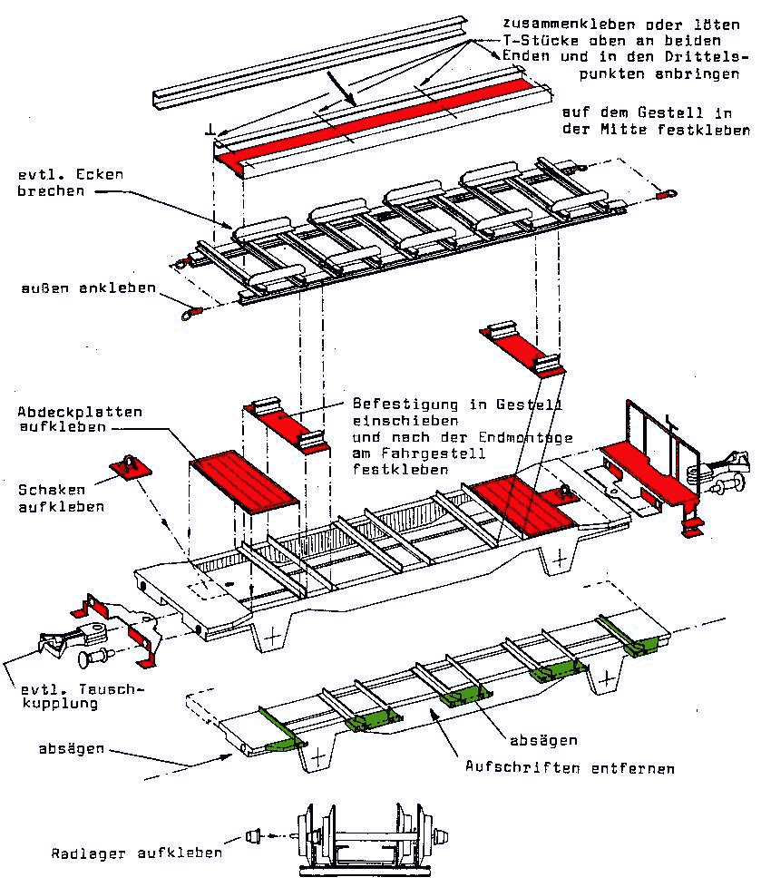

Krümelbahn
Krümelbahn Radsatztransportwagen192
Radsatztransportwagen192
 Radsatztransportwagen192
Radsatztransportwagen192
Radsatztransportwagen192 (40 80 952 0 581-6) im Museum Darmstadt-Kranichstein [5-94]

Allgemeine Informationen
Der Umbau beruht auf dem Spieth-Bausatz B104.An dieser Stelle soll jedoch darauf hingewiesen werden, das der BTms55 unter Fleischmann-Nr. 5230/5231 nicht mehr erhältlich ist und die Nummer inzwischen von einem BTms33 belegt wird!
Der BTms55 wird bei der DB zu vielfältigen - werkseigenen - Transportaufgaben verwendet, z.B. auch als
-
Die Ladefähigkeit eines BTms55 beträgt:
Lastgrenze = 26,5t
Jeder Radsatz wiegt ca. 1,5t (je Rad 0,5t, Achse 0,5t),
berücksichtigt man hierzu noch das Gewicht des Radsatzgestells, so können maximal 15 Radsätze transportiert werden. - Die Achsen haben zylinderförmige Achslager aus poliertem Stahl. Beim Transport sieht man daher entweder Achslager mit Schutzhüllen darüber, oder die Achsen werden gleich komplett einbaufertig mit Achslager verladen.

;){kind=link}
Literaturhinweise
Erwähnt wird der Radsatztransportwagen auch in:- ALBA-Modellbahnpraxis Spezial: Bahnbetriebswerke auf der Modellbahn
- Miba-Report Dienstfahrzeuge 2 (Seite 82 und 83): Radsatzwagen
- Bahndienst- und Dienstgüterwagen, Band 1: Spezialwagen für jeden Zweck S.174ff: Wagen für Radsätze
- Eisenbahn-Magazin 11/2024 (Seite 92f.): Fixierte Räder auf Rungenwagen
- Eisenbahn-Magazin 3/2025 (Seite 81ff.): Ruhende Räder auf Reisen
| Links |
|---|
Industriemodelle/Bausätze
| Hersteller | Epoche | H0 | TT | N | Bemerkungen |
|---|---|---|---|---|---|
| Liliput | III | L221511 (F) | beladen mit drei Dampflokachsen | ||
| Tillig | III | 76131 (F) | beladen mit einer Dampflokachse | ||
| Krüger-Modellbau | HO 74036.02 (B) | Radsatztransportwagen auf der Basis des BTms55. Bausatz mit zwei unterschiedlichen Wagen, Vorbild: LüP 11,0 m und 11,5 m, unterschiedl. Anschriften, feine Radsätze (Ladegut) als Zusatz. |
|||
| HO 98721 (B) | Transportpalette für Radsätze | ||||
| Kleingedrucktes H0 Kleingedrucktes H0 Kleingedrucktes H0 |
(unlackiert) | zwei Radsätze auf je einem Transportgestell zwei Radsätze auf je einem Transportgestell vier Radsätze auf je einem Transportgestell |
Bauteilliste
Als Basiswagen habe ich einen BTms55 (Fleischmann 5230) verwendet.An dieser Stelle soll jedoch darauf hingewiesen werden, das der BTms55 unter Fleischmann-Nr. 5230/5231 nicht mehr erhältlich ist und die Nummer inzwischen von einem BTms33 belegt wird!
Weiterhin wird je nach Verfeinerungswunsch benötigt:
| Stückzahl | Benennung | Best.Nr. | Techn.Daten | Hinweis |
|---|---|---|---|---|
| 1 | Güterwagenzurüstsatz | Weinert 9254 | 2 Pufferbohlen, 4 Puffersockelplatten 2 Zettelkästen, 6 Umstellhebel |
Zettelkästen und Umstellhebel werden benötigt, wenn die am Rahmen angegossenen Teile entfernt wurden in meiner Ätzplatte enthalten |
| 4 | Puffer | Weinert 8614 | (4er Pack) | |
| 2 | Hakenkupplung | Weinert 8648 | (2er Pack) | nicht bei Anbau einer Fahrzeugkupplung |
| 2 | Bremsschläuche, glatt | Weinert 8290 | (4er Pack) | nicht bei Anbau einer Fahrzeugkupplung |
| 1 | Bremserbühne | Weinert 9256 bzw. 87028 | in meiner Ätzplatte enthalten | |
| 4 | Rangiertritte | Weinert 8690 | (4er Pack) | in meiner Ätzplatte enthalten |
| Beschriftung | B104 | Die Fa. Spieth existiert nicht mehr. Beschriftungen können von Andreas Nothaft gefertigt werden. |
Wem der Bausatz B104 der Fa. Spieth nicht vorliegt, kommt um den Selbstbau des Radsatzgestells nicht herum.
Radsatzgestell
| Stückzahl | Benennung | Best.Nr. | Techn.Daten | Hinweis |
|---|---|---|---|---|
| Messingprofil | H-Profil: 2*2mm, ca.200mm lang U-Profil: 3*1,5mm, ca.200mm lang L-Profil: 1,5*1,5mm, ca.150mm lang T-Profil: 1,5*1,5mm, ca.50mm lang |
|||
| Schienenprofil | ca.300mm lang |
Sonstige Bauteile
| Stückzahl | Benennung | Best.Nr. | Techn.Daten | Hinweis |
|---|---|---|---|---|
| 1 | Ätzplatte | ...*...*0,3mm | beinhaltet auch Pufferbohlen, Pufferplatten, Rangiertritte, Bremserbühne, Zettelkästen, Umstellhebel | |
| (bis zu) 15 | Radsätze | Busch 7762 | ||
| 2 | Radlager | Messingdrehteil | jeweils für einen Radsatz |
Baubeschreibung

Radsatztransportwagen
in Betrieb seit: 10.2014
Die Baubeschreibung der Fa. Spieth beschreibt den Umbau eigentlich umfassend, einige Hinweise fehlen jedoch:
- Die Nieten, mit denen die Originalkupplungen befestigt sind, lassen sich am Besten mit einem Bohrer(1,8mm) von oben aufbohren
- Die Puffer besitzen ein Schraubgewinde und sind eingeschraubt
- die Zeichnungen auf Seite 3 sind etwas sparsam, ich habe diese ergänzt Montageskizze

Montageskizze
rot markiert sind hier die Ätzteile aus meiner Ätzplatte, grün markiert sind die Teile, die entfernt werden sollen. - da die Bremsumstellhebel an den Fahrzeugen immer gegenüber angeordnet sind (sie sind durch eine Stange miteinander verbunden), diese Anordnung am Fleischmann-Modell jedoch falsch ist, sind sinnigerweise diese Umstellhebel (und am besten auch gleich der Zettelkasten) ebenfalls zu entfernen und aus den Teilen des Weinert-Güterwagenzurüstsatzes bzw. meiner Ätzplatte zu ersetzen (und dann richtig anzuordnen).
;){kind=link}
- Länge des Gestells = 90mm [2 U-Profile, 2 H-Profile]
- Abstand der H-Profile = 21mm (von Außenkante zu Außenkante des Profils)
- Länge der Querschienen auf dem H-Profil = 26mm
- Mittenabstand der Schienen auf dem H-Profil = 9mm Bei Verwendung meiner Ätzplatte werden die beiden Schaken aus der 5*5mm großen Platte mit den beiden Seitenplatten und der Mittelplatte zusammengelötet, die Bremserbühne gemäß der
Montageskizze(siehe Montageskizze oben) gebogen.
Lackierung
| Farbe | Best.Nr. | Techn.Daten |
|---|---|---|
| Grundierung | Weinert 2698 | |
| Fahrgestell, Radsatzträger | Weinert 2646 | RAL 9005, schwarz |
- Fehl am Platz sind Achsen mit kegelförmigen Achsstummeln für z.B. Spitzenlager (s.o.)
Abhilfe:- Schutzhüllen z.B. aus Röhrchen (z.B. alte Kabelisolierung) oder kleinen Holzklötzchen
- 'original' Achslager aus alten Fahrwerken oder z.B. aus dem BahnSinn-Shop
- Störend wirken Radsätze mit überhöhten Spurkränzen
Abhilfe:- Spurkränze abdrehen
- Störend wirken Radsätze mit glänzenden Laufflächen, denn Stahl setzt im Freien recht schnell Rost an (der im normalen Betrieb ständig abgefahren wird)
Abhilfe:- dezente rostfarbene Alterung
- Sicherung der Ladung:
- zusätzliche Befestigung mit Kupferlackdraht (geschwärzt), damit die Radsätze nicht wegrollen oder beim Rangieren aus dem Ladegestell springen